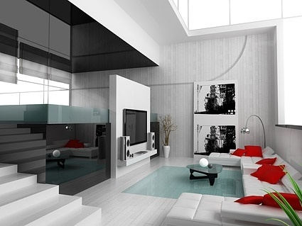

Interior design is the art and science of enhancing the interior of a building to achieve a healthier and more aesthetically pleasing environment for the people using the space. An interior designer is someone who plans, researches, coordinates, and manages such enhancement projects.
Interior designers make interior spaces functional, safe, and beautiful for almost every type of building. Interior designers make indoor spaces functional, safe, and beautiful by determining space requirements and selecting essential and decorative items, such as colors, lighting, and materials
Building a safer environment for you, our vendors, and our employees is our biggest priority. From our Experience Centres to our warehouses, and from our factories to your new homes, we are following strict safety protocols to make it a green zone for you.At Beautiful Homes Service, we ensure your house design is in the hands of our panel of experienced interior designers.
Interior designer implies that there is more of an emphasis on planning, functional design and the effective use of space, as compared to interior decorating. An interior designer in fine line design can undertake projects that include arranging the basic layout of spaces within a building as well as projects that require an understanding of technical issues such as window and door positioning, acoustics, and lighting.[1] Although an interior designer may create the layout of a space, they may not alter load-bearing walls without having their designs stamped for approval by a structural engineer. Interior designers often work directly with architects, engineers and contractors.
Residential design is the design of the interior of private residences. As this type design is very specific for individual situations, the needs and wants of the individual are paramount in this area of interior design.